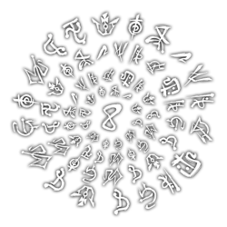
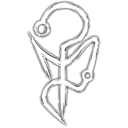

Os Elementos do Outro Lado são uma das principais fundações do Ocultismo. Esses que podem ser
divididos em cinco principais: Sangue, Morte, Conhecimento, Energia e Medo. Cada um desses elementos possuem
propriedades únicas e são responsáveis por definir as características das materializações do Outro Lado na
Realidade.
As Relíquias da Calamidade são a Ponte de cada Elemento do Outro Lado com a Realidade, sendo
responsáveis por permitir que eles se manifestem nela.
Sangue

O Sangue é a entidade do sentimento. Ele busca a intensidade: dor, obsessão, paixão, amor, fome, ódio -
tudo que envolve sentir uma emoção extrema agrada a entidade de Sangue. Os sentimentos extremos do Sangue
superam a razão e a calmaria do Conhecimento.
O Sangue foi o primeiro elemento a ser apresentado, através dos Zumbis de Sangue em A Ordem Paranormal.
Ele é o impulso da veemência dos sentimentos das entidades na Realidade.
Esse elemento está relacionado a emoções extremas, como dor, obsessão, paixão, amor, fome e ódio. As cores
que representam o Sangue são tons de vermelho. O Sangue é efetivo contra o elemento de Conhecimento, porque
os sentimentos extremos do Sangue superam a razão e a calmaria do Conhecimento, enquanto o elemento de Morte
é efetivo contra o Sangue, pois a distorção temporal da Morte arruína a percepção carnal do Sangue.
Afinidade
Possuir uma afinidade com o elemento do Sangue significa ser escolhido pela sua Entidade. Dentre as várias
consequências disso, é possível citar: Sentidos aguçados, maior sensibilidade à dor, veias saltadas, olhos
vermelhos, dentes e unhas afiadas, intensidade emocional, alteração na estrutura corporal, como no peso,
tamanho, musculatura, etc. Quanto maior a afinidade de um ocultista com a Entidade de Sangue, maior sua
proximidade de uma criatura bestial.
Rituais
Os rituais de Sangue sempre estão associados a alterações físicas e agressivas, com resultados nojentos e
brutais. Alguns requisitos para conjurar rituais de Sangue realçam a ideia de sentir dor, sendo eles auto
mutilação, derramamento de sangue e uso de órgãos humanos ou animais.
Os efeitos dos rituais também estão ligados a sentimentos extremos, como o Ritual de Ódio Incontrolável, que
deixa a pessoa a qual o ritual foi conjurado em um estado de fúria extrema e fazendo com que ela ataque alvos
que ela sente ódio. O Ritual de Descarnar faz com que a pele do alvo seja despedaçada de uma forma muito
dolorosa, frisando o sentimento de dor.
Criaturas
As criaturas de Sangue são bestiais, agressivas e nojentas, sendo em sua grande maioria cegas, porém com os
outros sentidos extremamente aguçados, principalmente o tato. Essas entidades apresentam sempre uma cor
avermelhada, e, em sua grande maioria, uma pele exposta, com garras e dentes afiados, juntamente de um líquido
repugnante e espesso, similar, porém diferente, ao sangue humano.
Morte

A Morte é a entidade do tempo. Ela busca os momentos vivenciados, distorcendo a percepção egóica da existência de
cada indivíduo para seu próprio agrado. A distorção temporal da Morte arruína a percepção carnal do Sangue.
A Morte foi o segundo elemento a ser apresentado, através de Santo Berço e do Lodo em O Segredo na Floresta.
Ela deve manter a cronologia da Realidade para que todas as histórias tenham um fim. Esse elemento está relacionado à
diversas características como espirais, repetição, Lodo Preto e distorção temporal, além de distorcer a percepção egóica
da existência de cada indivíduo. As cores que representam esse elemento são preto e tons de cinza. A Morte é efetiva
contra o elemento de Sangue, porque a distorção temporal da Morte arruína a percepção carnal do Sangue, enquanto o elemento
de Energia é efetivo contra a Morte, pois a transformação da Energia sobrecarrega os efeitos da Morte.
O comportamento da entidade de Morte parece girar em torno de si, buscando sucessivamente a aplicação da Energia Potencial
dedicada as espirais da Morte. Cada segundo que alguém perde contemplando as espirais é um segundo que esse mesmo alguém
poderia estar fazendo outras coisas, vivendo outras experiências. Todos esses momentos que poderiam acontecer, mas não
aconteceram, graças à Morte, são chamados de "Energia Potencial" ou "Entropia", e parecem ser o maior objetivo da Entidade
de Morte. A contemplação dos espirais fortalece os efeitos de distorção temporal dessa entidade, tornando-a mais poderosa.
Afinidade
Possuir uma afinidade ao elemento de Morte significa ser escolhido pela sua Entidade. Dentre as várias consequências disso,
é possível citar: alteração na cor de pele, tendo um aspecto mais acinzentado, alteração na cor do cabelo, mudando para tons
de preto ou branco, faixas pretas marcadas no rosto, olhos completamente pretos, sangue escurecido, envelhecimento espontâneo,
reflexos aprimorados, emagrecimento, alteração na estrutura óssea, alteração na percepção temporal, além de uma personalidade
mais fria e apática, tendo uma desafetação em relação ao impacto que a morte pode gerar.
Rituais
Os rituais de Morte sempre estão associados a distorção temporal e a degradação orgânica, seja pela percepção do tempo alterada
fisicamente ou psicologicamente. Alguns requisitos para conjurar rituais de Morte, como cinzas humanas ou de animais, transmitem
a ideia de coisas que não estão mais vivas.
Os efeitos dos rituais realçam a ideia da alteração da passagem do tempo, como o Ritual de Cicatrização, que acelera a cicatrização
de uma ferida em um formato espiral. O Ritual de Eco Espiral cria uma projeção do alvo e faz com que os golpes que ele receber
sejam repetidos, realçando a ideia de repetição.
Criaturas
As criaturas de Morte são apáticas, sempre demonstrando crueldade, frieza, indiferença e movimentos inconstantes. A percepção temporal
das criaturas de Morte é completamente distorcida, podendo ser extremamente lenta ou acelerada. Em alguns casos, criaturas de Morte podem
acelerar sua própria percepção temporal, se tornando momentaneamente aceleradas e logo em seguida desaceleradas interinamente. Sua anatomia
sempre apresenta uma forma esquelética e esguia, juntamente do característico Lodo Preto da Morte, podendo ter também formas em espirais.
Conhecimento
O Conhecimento é a entidade da consciência. Descobrir, aprender, conhecer, decifrar. Ter a própria percepção do Outro Lado e suas entidades
agrada o elemento de Conhecimento. A razão e lógica do Conhecimento reintegram e suprimem o caos da Energia.
O Conhecimento foi o terceiro elemento a ser apresentado, através dos Escriptas e dos Existidos em Ordem Paranormal: Desconjuração. Apesar de
essa ter sido a sua introdução mais direta, ele já havia aparecido em O Segredo na Floresta na forma de Sigilos de Conhecimento no Símbolo de
Santo Berço.
Ele deve manter o equilíbrio para que a Realidade suscite um propósito. Esse elemento é caracterizado por descobrir, aprender, conhecer e
decifrar, além de estar ligado diretamente aos "Sussurros do Conhecimento". As cores que representam esse elemento são tons de amarelo. O
Conhecimento é efetivo contra o elemento de Energia, porque a razão e lógica do Conhecimento reintegram e suprimem o caos da Energia, enquanto
o elemento de Sangue é efetivo contra o Conhecimento, pois os sentimentos extremos do Sangue superam a razão e a calmaria do Conhecimento.
O comportamento da Entidade de Conhecimento parece estar conectado diretamente com a ideia de descobrir, lembrar, aprender e registrar
informações. Acontecimentos que foram uma grande fonte de Medo, registrados em textos, palavras ou até Sigilos, agradam e fortalecem a
entidade do Conhecimento. Compreender o Conhecimento por completo seria o equivalente a saber absolutamente tudo do Outro Lado.
Afinidade
Possuir uma afinidade ao elemento de Conhecimento significa ser escolhido pela sua Entidade. Dentre as várias consequências disso, é possível
citar: Olhos amarelos ou esbranquiçados, inscrições na pele, falta de emoções, aura dourada, partes do corpo, como braços, pernas e dedos
alongadas e finas, ossos fragilizados, desaparecimento de lábios/boca e orelhas, profundas olheiras, além de resultar em uma personalidade mais
lógica, estratégica e muitas vezes manipuladora.
Rituais
Os rituais de Conhecimento estão sempre associados à percepção da Realidade, manipulação da comunicação humana, além de qualquer meio de
comunicação com o Outro Lado e suas Entidades. O requisito mais comum para conjurar rituais de Conhecimento é se concentrar nos símbolos,
com exceção do Ritual de Compreensão Paranormal que requer estar próximo à uma vela.
Um exemplo de ritual que concede um efeito ao seu usuário é o Ritual de Compreensão Paranormal (mais conhecido com Transcender), fazendo
com que ele consiga entender qualquer linguagem escrita. Um ritual como o Ritual de Passagem de Conhecimento apresenta o efeito de
interagir com a consciência, transferindo a consciência de um indivíduo para outro.
Criaturas
As criaturas de Conhecimento se apresentam como lógicas e vagamente inteligentes, demonstrando uma espécie de consciência de suas próprias
ações, tendo suas motivações individuais entre si. Muitas criaturas desse elemento são criadas a partir da mente humana e seus maiores medos.
A aparência dessas entidades possui grandes similaridades com os humanos, enfatizando que sua origem vem da mente humana.
Essas criaturas tem um comportamento mais neutro, se comparado com as criaturas de outros elementos, só atacando caso forem atacadas
primeiramente. Elas agem de forma menos bestial e mais pensante, podendo sentir até medo e ansiedade, sendo criaturas capazes de realizar
rituais. Alguns exemplos de criaturas de Conhecimento são os Existidos e o Espreitador.
Energia

A Energia é a entidade do caos. Tudo que não pode ser explicado, o intangível, a anarquia. A constante mudança, o calor e o frio,
a luz e as trevas. Tudo que envolve a imprevisibilidade e a transformação agrada a entidade de Energia. A transformação da Energia
sobrecarrega os efeitos da Morte.
A Energia foi o quarto elemento a ser apresentado, através dos Existidos de Energia e da Sala do Anfitrião em Ordem Paranormal:
Desconjuração. No entanto, essa entidade só veio a receber maior destaque durante Ordem Paranormal: Calamidade, com os Funcionários
do Anfiteatro e as Ruínas de Ordo Calamitas.
Ela determina a imprevisibilidade, pois nem mesmo as correntes da Realidade devem controlar tudo. Esse elemento é caracterizado por
tudo que não pode ser explicado, o intangível, a anarquia e pela transformação. Uma das manifestações mais marcantes desse elemento
é em uma forma etérea fantasmagórica, descrita como uma matéria que está em constante transformação entre os estados sólido, liquido
e gasoso que adquire uma aparência de "chama líquida", nas cores que representam a Energia, sendo elas tons de roxo, azul, ciano,
verde e rosa. A Energia é efetiva contra o elemento de Morte, porque a transformação da Energia sobrecarrega os efeitos da Morte,
enquanto o elemento de Conhecimento é efetivo contra a Energia, pois a razão e lógica do Conhecimento reintegram e suprimem o caos
da Energia.
A Entidade de Energia se comporta diferente das outras, parecendo nunca seguir um padrão lógico específico. Suas motivações parecem
estar conectadas apenas com o seu próprio entretenimento, causando dor e agonia aos outros. A Energia representa todo o caos, a
anarquia, a constante mudança e a imprevisibilidade.
Afinidade
Possuir uma afinidade ao elemento de Energia significa ser escolhido por sua Entidade. Dentre as várias consequências disso,
é possível citar: olhos multicoloridos, veias brilhando, tiques incontroláveis, tremedeira, crises de ansiedade, hiperatividade,
queimaduras, cabelos e pele com cores vibrantes, partes do corpo mesclados com tecnologia ou com objetos metálicos, olhos brilhando
no escuro, além de uma personalidade imprevisível, caótica e insana.
Rituais
Os rituais de Energia costumam ter um resultado muito exorbitante, onde uma mesma manifestação pode causar um efeito extremo
ou sutil. Os efeitos da distorção na Realidade por conta da Energia sempre estão associados à transformação de elementos
naturais, como a água, o fogo, a temperatura, o vento, a eletricidade, entre outros. O elemento de Energia também está associado
a tecnologia e objetos eletrônicos, como televisões, computadores, cabos, internet, etc. Alguns dos efeitos desses rituais são
paralisar um alvo, aprimorar o dano de uma arma e criar garras feitas da matéria etérea. Os requisitos mostrados até agora para
realizar rituais desse elemento são segurar um objeto tecnológico na mãos, estar próximo à uma fonte de energia e apertar duas
baterias.
Como exemplo de ritual temos o Ritual de Amaldiçoar Tecnologia, que aumenta o dano de uma arma escolhida pelo seu usuário. Os
rituais de "Onda de Choque" e Paralisia são capazes de paralisar o seu alvo, sendo o primeiro através de raios que saem do
corpo do usuário.
Criaturas
As criaturas de Energia são caóticas e imprevisíveis, agindo muitas vezes de forma completamente irracional e aleatória,
podendo, muitas vezes, serem algo imaterial, como um programa de computador, uma onda sonora ou até um espírito. Essas
criaturas muitas vezes apresentam em sua aparência uma forma etérea, exalando uma energia paranormal plasmática em constante
transformação, quase como uma chama em movimento.
Essas criaturas tem um comportamento hostil e, diferente da maioria das criaturas de outros elementos, seus ataques afetam
principalmente a mente dos seus alvos, através do uso de rituais. Algumas delas são capazes de mostrar visões perturbadoras
ao atacar, que afeta somente a sanidade do alvo, enquanto outras são capazes de atingir seus alvos fisicamente, afetando a
sanidade junto. Alguns exemplos de criaturas de Energia são os Perturbados de Energia e os Espectros Inesquecidos.
Medo
O Medo é a entidade do desconhecido e do infinito. Presente desde os primórdios da humanidade, modifica a natureza do universo.
A sua existência diferenciada é um mistério.
O Medo é o elemento mais misterioso do Outro Lado. Nada nele pode ser classificado como nos outros elementos. Todas as
manifestações paranormais são geradas pelo Medo. A manifestação física do Medo na Realidade é incompreensível e impossível,
como se fosse uma chama transparente, distorcendo toda a realidade em sua volta. Os poucos que presenciaram tamanha manifestação,
também descreveram ter visto "um vislumbre de Deus", como se o próprio cérebro humano não pudesse processar um evento impossível
como este.
Apesar disso tudo, acredita-se que a névoa misteriosa encontrada em locais com a Membrana danificada é a manifestação do Medo
mais presente dentro da Realidade. É esperado que o elemento de Medo seja mais esclarecido em Ordem Paranormal: Enigma do Medo,
já que sua trama irá envolver um culto focado nele.
Rituais
Rituais de Medo estão diretamente conectados com a desconsideração das regras do Outro Lado, sendo capazes de feitos gigantescos
e aterrorizantes. Apenas os "Marcados", aqueles conectados com suas "Marcas" através do Medo, podem conjurar rituais de Medo.
Criaturas
Como exemplo de ritual, temos o Ritual de Cinerária, um ritual que manifesta a névoa Paranormal, fortalecendo todas as manifestações
paranormais da área. Outro exemplo de ritual de Medo é o Ritual de Rejeitar Névoa, cuja habilidade é invocar um redemoinho de névoa,
capaz de enfraquecer todos os rituais na área.
Algumas criaturas associadas ao Medo podem transcender as "regras" de seus próprios elementos, e enfrentá-las envolve um processo
complexo, exigindo a solução de enigmas e mistérios específicos.
Os comportamentos das criaturas de Medo se mostram diversos, sendo geralmente ditadas por alguns de seus outros elementos. Alguns
exemplos de criaturas de Medo são o Viajante e a Mulher Afogada.
Combinação dos Elementos
Apesar dos elementos serem efetivos uns contra os outros, eles podem aparecer combinados em forma de rituais ou criaturas.
Ritual de Ouvir os Sussurros é um exemplo de ritual que combina os elementos Morte, Conhecimento e Energia, possibilitando
que o usuário se comunique com espíritos de um determinado local. A Degolificada é um exemplo de uma manifestação direta do
Outro Lado, sendo ela formada por todos os elementos. A fraqueza dessas criaturas são determinadas pelo seu elemento
principal, com a Degolificada por exemplo não tendo fraquezas nem resistências; no caso do Viajante ele seria fraco a
Conhecimento e resistiria a Energia.
